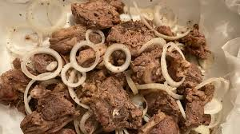
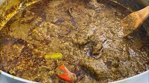

Nos Entrées
Commencez votre expérience culinaire avec notre sélection d’entrées, conçues pour éveiller vos papilles en douceur. Entre saveurs fraîches, recettes traditionnelles et touches gourmandes, chaque plat est préparé avec soin pour vous offrir un avant-goût savoureux de notre cuisine. Légères ou généreuses, nos entrées sont le début parfait d’un repas plein de découvertes.


Ajouter au panier
Ajouter au panier
Ajouter au panier
Ajouter au panier
Ajouter au panier
Ajouter au panier
Description Salade Sénégalaise
La salade sénégalaise est une entrée fraîche et savoureuse, préparée à base de légumes variés comme les pommes de terre, les carottes et les petits pois. Elle est mélangée à une sauce onctueuse à la mayonnaise, parfois accompagnée d’œufs durs ou de thon pour plus de goût. Légère et gourmande, elle est idéale en entrée ou lors des repas festifs, offrant une touche de fraîcheur et de simplicité à la cuisine sénégalaise.
Description Pastel
Les pastels sénégalais sont de petits beignets dorés et croustillants, farcis au poisson assaisonné avec des épices locales. Ils sont généralement servis avec une sauce tomate légèrement pimentée. Savoureux et généreux, ils constituent une entrée ou un snack incontournable de la cuisine sénégalaise.
Description Fataya
Les Fataya sont de délicieux beignets salés typiques de la cuisine sénégalaise, préparés avec une pâte fine et croustillante, puis farcis généralement de viande hachée assaisonnée, d’oignons et d’épices. Ils sont frits jusqu’à obtenir une texture dorée et légèrement croustillante à l’extérieur, tout en restant fondants et savoureux à l’intérieur. Les fatayas sont souvent servis avec une sauce tomate épicée ou une sauce pimentée. Très populaires comme snack ou entrée, ils sont appréciés pour leur goût riche et leur simplicité..
Description Cruidite
Fraîche, colorée et pleine de vitalité, notre salade aux crudités est une invitation à la légèreté. Composée de légumes croquants soigneusement sélectionnés — laitue, tomates, carottes râpées et concombres — elle est relevée d’une vinaigrette maison délicatement parfumée. Parfaite en entrée, elle apporte une touche de fraîcheur naturelle et équilibre à votre repas.
Description Accra Crevette
Savourez le croustillant irrésistible de nos accras de crevettes, de délicieux beignets dorés à base de crevettes finement assaisonnées. Légèrement épicés et parfaitement frits, ils offrent une texture moelleuse à l’intérieur et croquante à l’extérieur. Idéal en entrée ou à partager, ce classique revisité séduira les amateurs de saveurs marines.
Description Bouillie de mil
Réconfortante et authentique, la bouillie de mil est une spécialité traditionnelle riche en saveurs et en bienfaits. Préparée à base de mil finement moulu, elle est doucement cuite pour obtenir une texture onctueuse, souvent accompagnée de lait, de sucre ou de miel selon vos préférences. Nourrissante et délicate, elle est parfaite pour bien commencer la journée ou pour une pause gourmande chaleureuse.
Nos boissons Chaudes
Découvrez notre sélection de boissons chaudes, soigneusement préparées pour vous offrir un moment de réconfort et de détente. Du café traditionnel aux infusions naturelles, chaque tasse révèle des arômes riches et authentiques qui réchauffent le corps et éveillent les sens. Idéales pour commencer ou accompagner votre repas, nos boissons chaudes sont une invitation à savourer l’instant avec douceur et intensité.


Ajouter au panier
Description Salade Sénégalaise
Commencez votre repas avec une touche de fraîcheur grâce à notre boisson à la menthe. Légère et rafraîchissante, elle associe la douceur naturelle à l’arôme intense de la menthe pour éveiller vos papilles dès les premières gorgées. Parfaite pour se désaltérer, cette boisson apporte une sensation de fraîcheur immédiate tout en préparant agréablement le palais à la suite du repas. Servie bien fraîche, elle est idéale pour accompagner les journées chaudes et offrir un moment de pure détente. Simple, naturelle et revitalisante, notre boisson à la menthe est l’entrée parfaite pour débuter votre expérience culinaire.
Description Salade Sénégalaise
Découvrez le Café Touba, une boisson emblématique du Sénégal qui allie intensité et caractère. Préparé à base de café infusé avec du poivre de Guinée (djar), il offre un goût unique, légèrement épicé et profondément aromatique. Servi chaud, ce café traditionnel est idéal pour débuter votre repas avec énergie et authenticité. Son parfum puissant et sa saveur chaleureuse éveillent les sens et apportent une touche culturelle riche à votre expérience culinaire. À la fois stimulant et réconfortant, le Café Touba est bien plus qu’une boisson : c’est un véritable voyage au cœur des traditions sénégalaises.p>
Description Salade Sénégalaise
Savourez la douceur réconfortante de notre lait chaud, une boisson simple et apaisante qui réchauffe le corps et l’esprit. Servi à la température idéale, il offre une texture onctueuse et un goût délicatement crémeux. Parfait pour débuter votre repas en toute légèreté, le lait chaud procure une sensation de bien-être immédiate. Il peut être dégusté nature ou légèrement sucré selon vos préférences. Authentique et nourrissant, c’est le choix idéal pour une entrée douce et réconfortante.
Description Salade Sénégalaise
Offrez-vous un moment de détente avec notre tisane aux arômes naturels. Préparée à partir d’un mélange de plantes soigneusement sélectionnées, elle séduit par sa douceur et son parfum délicat. Légère et apaisante, cette boisson chaude est idéale pour débuter votre repas en toute sérénité. Elle aide à relaxer le corps tout en éveillant subtilement les sens. Servie bien chaude, notre tisane est une invitation au calme et au bien-être, parfaite pour une entrée douce et naturelle.
Description Salade Sénégalaise
Laissez-vous séduire par l’alliance parfaite du miel doux et du citron frais dans notre thé miel citron. Cette boisson chaude et parfumée offre un équilibre harmonieux entre douceur et légère acidité. Idéal pour bien commencer votre repas, il réchauffe, apaise et réveille les papilles en douceur. Le miel apporte une touche sucrée naturelle, tandis que le citron offre une fraîcheur vivifiante. À la fois réconfortant et revitalisant, ce thé est le choix parfait pour une entrée légère et pleine de saveurs.
Description Salade Sénégalaise
Découvrez le Wass, une boisson traditionnelle sénégalaise à base de mil, à la fois rafraîchissante et nourrissante. Sa texture légèrement granuleuse et son goût doux en font une boisson unique et authentique. Parfait pour débuter votre repas, le Wass apporte une sensation de fraîcheur tout en offrant une touche d’énergie naturelle. Subtilement sucré, il séduit par sa simplicité et son caractère typiquement local. Servi bien frais, le Wass est une invitation à savourer les richesses culinaires du Sénégal dès les premières gorgées.
Description du NGALAKH
Le Ngalakh est un dessert traditionnel emblématique du Sénégal, reconnu pour sa texture crémeuse et son goût unique mêlant douceur et acidité. Ce mets est traditionnellement préparé par la communauté chrétienne pour célébrer la fête de Pâques, avant d'être généreusement partagé avec les voisins et amis, notamment musulmans, symbolisant ainsi la cohésion sociale et le dialogue islamo-chrétien au pays de la Teranga.
Description du lakh
Le Lakh est un plat traditionnel sénégalais à base de mil, principalement consommé sous forme de bouillie épaisse servie avec du lait caillé sucré ou du yaourt. Contrairement au Ngalakh, qui est une version festive et plus complexe, le Lakh est un met plus sobre, souvent servi au petit-déjeuner ou lors de cérémonies familiales comme les baptêmes.
Description du fonde
Le Fondé est une bouillie de mil traditionnelle du Sénégal, appréciée pour sa légèreté et ses vertus nutritives. Contrairement au Lakh ou au Ngalakh qui sont des desserts consistants, le Fondé est une préparation plus fluide, souvent consommée le soir ou au petit-déjeuner pour faciliter la digestion.
Description des beignets SUCRES
Les beignets sucrés sont les stars de la cuisine de rue ("street food"). On les trouve à chaque coin de rue, souvent vendus par des "Tandarma" dans des paniers tressés, et ils accompagnent parfaitement le Fondé ou le café Touba.
Description des salades de fruits
Pour rester dans l'esprit des douceurs sénégalaises que nous venons d'évoquer (Ngalakh, Fondé, Beignets), la salade de fruits au Sénégal est souvent un mélange de fraîcheur tropicale et de gourmandise.
Incrivez pour ne manquer aucun
de nos meilleurs entrées.
Nos Plats
Savourez nos plats soigneusement préparés, alliant authenticité et générosité. Inspirés des recettes traditionnelles et revisités avec passion, ils offrent un mélange riche de saveurs et d’arômes qui séduisent à chaque bouchée. Chaque assiette est une invitation à découvrir une cuisine pleine de caractère, où qualité et plaisir se rencontrent pour un moment inoubliable.




Incrivez pour ne manquer aucun
de nos meilleurs plats.
Nos desserts
Commencez votre expérience culinaire avec notre sélection d’entrées, conçues pour éveiller vos papilles en douceur. Entre saveurs fraîches, recettes traditionnelles et touches gourmandes, chaque plat est préparé avec soin pour vous offrir un avant-goût savoureux de notre cuisine. Légères ou généreuses, nos entrées sont le début parfait d’un repas plein de découvertes.


Nos cocktails
Commencez votre expérience culinaire avec notre sélection d’entrées, conçues pour éveiller vos papilles en douceur. Entre saveurs fraîches, recettes traditionnelles et touches gourmandes, chaque plat est préparé avec soin pour vous offrir un avant-goût savoureux de notre cuisine. Légères ou généreuses, nos entrées sont le début parfait d’un repas plein de découvertes.

Incrivez pour ne manquer aucun
de nos meilleurs desserts.
Contact
Description des salades de fruits
Pour rester dans l'esprit des douceurs sénégalaises que nous venons d'évoquer (Ngalakh, Fondé, Beignets), la salade de fruits au Sénégal est souvent un mélange de fraîcheur tropicale et de gourmandise.
Description des salades de fruits
Pour rester dans l'esprit des douceurs sénégalaises que nous venons d'évoquer (Ngalakh, Fondé, Beignets), la salade de fruits au Sénégal est souvent un mélange de fraîcheur tropicale et de gourmandise.
Description des salades de fruits
Pour rester dans l'esprit des douceurs sénégalaises que nous venons d'évoquer (Ngalakh, Fondé, Beignets), la salade de fruits au Sénégal est souvent un mélange de fraîcheur tropicale et de gourmandise.
Description des salades de fruits
Pour rester dans l'esprit des douceurs sénégalaises que nous venons d'évoquer (Ngalakh, Fondé, Beignets), la salade de fruits au Sénégal est souvent un mélange de fraîcheur tropicale et de gourmandise.
Description des salades de fruits
Pour rester dans l'esprit des douceurs sénégalaises que nous venons d'évoquer (Ngalakh, Fondé, Beignets), la salade de fruits au Sénégal est souvent un mélange de fraîcheur tropicale et de gourmandise.
Description des salades de fruits
Pour rester dans l'esprit des douceurs sénégalaises que nous venons d'évoquer (Ngalakh, Fondé, Beignets), la salade de fruits au Sénégal est souvent un mélange de fraîcheur tropicale et de gourmandise.
Description des salades de fruits
Pour rester dans l'esprit des douceurs sénégalaises que nous venons d'évoquer (Ngalakh, Fondé, Beignets), la salade de fruits au Sénégal est souvent un mélange de fraîcheur tropicale et de gourmandise.
Description des salades de fruits
Pour rester dans l'esprit des douceurs sénégalaises que nous venons d'évoquer (Ngalakh, Fondé, Beignets), la salade de fruits au Sénégal est souvent un mélange de fraîcheur tropicale et de gourmandise.
Description des salades de fruits
Pour rester dans l'esprit des douceurs sénégalaises que nous venons d'évoquer (Ngalakh, Fondé, Beignets), la salade de fruits au Sénégal est souvent un mélange de fraîcheur tropicale et de gourmandise.
Description des salades de fruits
Pour rester dans l'esprit des douceurs sénégalaises que nous venons d'évoquer (Ngalakh, Fondé, Beignets), la salade de fruits au Sénégal est souvent un mélange de fraîcheur tropicale et de gourmandise.
Description des salades de fruits
Pour rester dans l'esprit des douceurs sénégalaises que nous venons d'évoquer (Ngalakh, Fondé, Beignets), la salade de fruits au Sénégal est souvent un mélange de fraîcheur tropicale et de gourmandise.
Description des salades de fruits
Pour rester dans l'esprit des douceurs sénégalaises que nous venons d'évoquer (Ngalakh, Fondé, Beignets), la salade de fruits au Sénégal est souvent un mélange de fraîcheur tropicale et de gourmandise.
Description The à la menthe
Rafraîchissant et parfumé, notre thé à la menthe est une véritable invitation au voyage. Infusé avec des feuilles de menthe fraîche et subtilement sucré, il offre un équilibre parfait entre douceur et intensité. Servi chaud, il accompagne idéalement vos moments de détente ou vos repas en toute convivialité.
Description Cafe Touba
Authentique et emblématique, le Café Touba est une boisson sénégalaise au caractère unique. Préparé à base de café infusé avec du poivre de Guinée (djar), il dévoile des arômes épicés et profonds. Réconfortant et stimulant, il est parfait pour commencer la journée ou pour une pause riche en saveurs locales.
Description Lait Chaud
Simple et réconfortant, le lait chaud est une boisson douce qui évoque chaleur et apaisement. Servi bien chaud, il peut être dégusté nature ou légèrement sucré selon vos envies. Idéal pour un moment de détente, il convient à tous les âges et accompagne parfaitement vos collations.
Description Tisan
Naturelle et apaisante, notre tisane est préparée à partir de plantes soigneusement sélectionnées. Chaque tasse offre une infusion délicate aux vertus relaxantes, parfaite pour se détendre après une longue journée. Une boisson légère et bienfaisante qui allie simplicité et bien-être.
Description The miel et citron
Revitalisant et savoureux, le thé au miel et citron associe la douceur du miel à la fraîcheur acidulée du citron. Cette boisson chaude est idéale pour se réchauffer tout en profitant d’un mélange harmonieux de saveurs. Parfaite pour un moment de réconfort ou pour accompagner vos instants
Description Wass
Traditionnel et rafraîchissant, le wass est une spécialité sénégalaise à base de semoule de mil finement travaillée. Léger et légèrement sucré, il est souvent accompagné de yaourt ou de lait caillé pour une expérience encore plus gourmande. À la fois nourrissant et savoureux, il séduit par son authenticité et sa texture unique.
Description Thieboudiene
Plat emblématique du Sénégal, le thiéboudienne est un savoureux mélange de riz, de poisson et de légumes mijotés dans une sauce tomate riche en arômes. Préparé avec soin selon la tradition, il offre un équilibre parfait entre générosité, épices et authenticité. Un incontournable de la cuisine sénégalaise qui ravit les papilles à chaque bouchée.
Description Yassa
Le yassa poulet est un plat incontournable aux saveurs acidulées et parfumées. Le poulet est mariné dans du citron, de la moutarde et des oignons, puis mijoté lentement pour révéler toute sa tendreté. Servi avec du riz, ce plat séduit par son goût unique et son mélange harmonieux d’épices.
Description Mafe
Riche et onctueux, le mafé est un ragoût à base de pâte d’arachide qui offre une explosion de saveurs. Accompagné de viande et de légumes, il est mijoté lentement pour obtenir une sauce épaisse et savoureuse. Ce plat généreux est parfait pour les amateurs de cuisine réconfortante et authentique.
Description Thiofe
Délicatement grillé, le thiof séduit par sa chair tendre et son goût raffiné. Assaisonné avec des épices locales et cuit à la perfection, il offre une expérience gustative à la fois simple et élégante. Servi avec des accompagnements traditionnels, il met à l’honneur les richesses de la mer.
Description Thiofe
Délicatement grillé, le thiof séduit par sa chair tendre et son goût raffiné. Assaisonné avec des épices locales et cuit à la perfection, il offre une expérience gustative à la fois simple et élégante. Servi avec des accompagnements traditionnels, il met à l’honneur les richesses de la mer.
Description Soupa Kandja
Le moroxé est un plat traditionnel à base de riz cuit avec de la viande ou du poisson, relevé par des épices et parfois agrémenté de légumes. Simple mais plein de saveurs, il incarne une cuisine familiale généreuse et conviviale. Idéal pour découvrir une autre facette de la gastronomie sénégalaise.
Description Domoda
Riche et savoureux, le domoda est un plat traditionnel sénégalais préparé avec une délicieuse sauce à base de pâte d’arachide et de tomate. Accompagné de viande tendre et de légumes mijotés, il offre une texture onctueuse et un goût généreux. Servi avec du riz blanc, c’est un véritable classique réconfortant qui séduit par sa profondeur de saveurs. Le moroxé est un plat traditionnel à base de riz cuit avec de la viande ou du poisson, relevé par des épices et parfois agrémenté de légumes. Simple mais plein de saveurs, il incarne une cuisine familiale généreuse et conviviale. Idéal pour découvrir une autre facette de la gastronomie sénégalaise.
Description Riz gras senegalais
Parfumé et coloré, le riz gras sénégalais est un plat généreux cuisiné dans une sauce tomate riche et épicée. Préparé avec de la viande ou du poulet et agrémenté de légumes, chaque grain de riz est imprégné de saveurs intenses. Convivial et nourrissant, il est parfait pour partager un moment gourmand autour d’un repas traditionnel.
Description Dibi
Authentique et irrésistible, le dibi est une spécialité sénégalaise de viande grillée, généralement du mouton, cuite au feu de bois. Assaisonnée avec des épices simples qui mettent en valeur la qualité de la viande, elle est servie chaude avec des oignons et de la moutarde. À la fois croustillant à l’extérieur et tendre à l’intérieur, le dibi est une expérience culinaire pleine de caractère.
Description Ngalax
Onctueux et riche en saveurs, le ngalakh est un dessert traditionnel sénégalais préparé à base de pâte d’arachide, de bouye (fruit du baobab) et de pain émietté. Parfumé et légèrement sucré, il offre une texture généreuse et un goût unique qui allie douceur et authenticité. Très apprécié lors des occasions spéciales, il incarne la gourmandise à la sénégalaise.
Description Thiakri
Frais et savoureux, le thiakry est un dessert à base de couscous de mil mélangé à du lait caillé ou du yaourt. Délicatement sucré et parfumé, il est souvent agrémenté de raisins secs ou d’arômes subtils. Léger et onctueux, il est parfait pour terminer un repas sur une note douce et rafraîchissante.
Description Lakh
Traditionnel et nourrissant, le lakh est une spécialité sénégalaise à base de mil accompagnée d’une sauce crémeuse souvent préparée avec du lait caillé. Sa texture épaisse et son goût légèrement sucré en font un dessert réconfortant et authentique, très apprécié pour sa simplicité et sa richesse.
Description Fonde
Authentique et consistant, le fondé est un plat à base de boules de mil servies avec une sauce riche, souvent à base de lait caillé ou de pâte d’arachide. À la fois nourrissant et savoureux, il représente un héritage culinaire traditionnel, apprécié pour sa texture unique et son goût généreux.
Description beignets sucrées
Moelleux et dorés, les beignets sucrés sont une douceur irrésistible. Légèrement croustillants à l’extérieur et tendres à l’intérieur, ils sont délicatement sucrés pour un plaisir gourmand à chaque bouchée. Parfaits pour accompagner une boisson chaude ou pour une pause sucrée à tout moment de la journée.
Description Salade de fruit
Fraîche et colorée, la salade de fruits est un mélange savoureux de fruits de saison soigneusement sélectionnés. Légère et naturellement sucrée, elle apporte une touche de fraîcheur et de vitalité en fin de repas. Idéale pour une pause saine et gourmande, elle séduit par sa simplicité et son goût rafraîchissant.